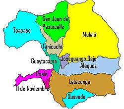
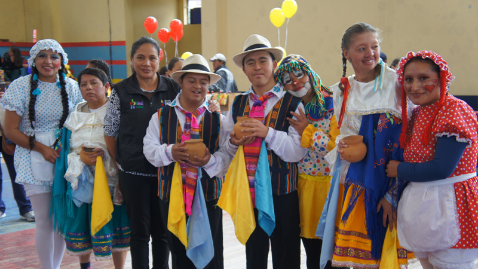

Ciudad de Latacunga
| Ubicación | Provincia de Cotopaxi, región Sierra central del Ecuador |
|---|---|
| Expansión geográfica | Aproximadamente 385.6 km² |
| Altura sobre el nivel del mar | 2,800 metros |
| Clima | Templado seco, con temperaturas entre 8°C y 20°C |
| Volcán cercano | Cotopaxi (uno de los volcanes activos más altos del mundo) |

Población
| Número de habitantes | Aproximadamente 98,000 habitantes (según estimaciones recientes) |
|---|---|
| Densidad poblacional | Aproximadamente 254 hab/km² |
| Gentilicio | Latacungueño/a |
| Idiomas principales | Español, Kichwa (en comunidades rurales) |

Alcaldes
| Nombre | Período |
|---|---|
| Byron Cárdenas | 2019 - 2023 |
| Patricio Sánchez | 2014 - 2019 |
| Rodrigo Espín | 2009 - 2014 |
| Fernando Yánez | 2004 - 2009 |
Byron Cárdenas |
Patricio Sánchez
|
Rodrigo Espín |
Fernando Yáñez
|